Interiors design by Ettore Sottsass and Shiro Kuramata recreated with PLaSM modeling language.
In this page will be shown some works by design artists Ettore Sottsass and Shiro Kuramata, master designers of the 20th century. These objects are recreated in 3D modeling thanks to the use of PLaSM language.
Ettore Sottsass:
Shiro Kuramata:
Ettore Sottsass
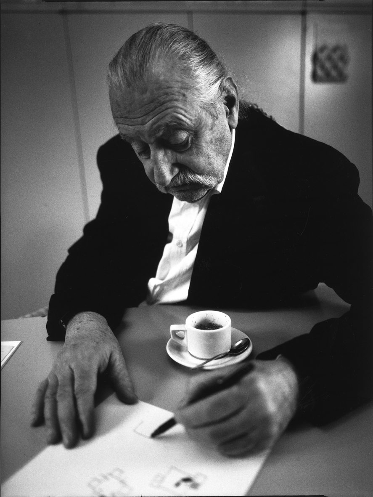Biography:
Ettore Sottsass (14 September 1917 – 31 December 2007) was an Italian architect and designer of the late 20th century. His body of designs included furniture, jewelry, glass, lighting and office machine design.
Sottsass was born on 14 September 1917 in Innsbruck, Austria, and grew up in Milan, where his father was an architect. He was educated at the Politecnico di Torino in Turin and graduated in 1939 with a degree in architecture. He served in the Italian military and spent much of World War II in a concentration camp in Yugoslavia. After returning home in 1947, he set up his own architectural and industrial design studio in Milan. In 1959 Sottsass began working as a design consultant for Olivetti, designing office equipment, typewriters and furniture. Throughout the 1960s, Sottsass traveled in the US and India and designed more products for Olivetti culminating in the bright red plastic portable Valentine typewriter in 1969, which became a fashion accessory. While continuing to design for Olivetti in the 1960s, Sottsass developed a range of objects which were expressions of his personal experiences traveling in the United States and India. These objects included large altar-like ceramic sculptures and his "Superboxes"; radical sculptural gestures presented within a context of consumer product, as conceptual statement. Covered in bold and colorful, simulated custom laminates, they were precursors to Memphis, a movement which came more than a decade later.
In 1981, Sottsass and an international group of young architects and designers, came together to form the Memphis Group. Memphis was launched with a collection of 40 pieces of furniture, ceramics, lighting, glass and textiles which featured fluorescent colors, slick surfaces, intentionally lop-sided shapes and squiggly laminate patterns. The group's colourful, ironic pieces were hailed as one of the most characteristic examples of Post-modernism in design and the arts.
Whilst the Memphis movement in the eighties attracted enormous attention around the world for its energy and flamboyance, Ettore Sottsass was simultaneously assembling a major design consultancy which he named Sottsass Associati. The studio was established in 1980 and gave the possibility to build architecture on a substantial scale as well as to design for large international industries. Sottsass Associati, primarily an architectural practice, also designed elaborate stores and showrooms for Esprit, identities for Alessi, exhibitions, interiors, consumer electronics in Japan and furniture of all kinds. The studio was based on the cultural guidance of Ettore Sottsass and the work conducted by its many young associates, whom over the years often left to open their own studios. Sottsass Associati are presently based in London and Milan and continue to sustain the work, philosophy and culture of the studio.
Carlton room divider, designed in 1981 by Ettore Sottsass, in wood and plastic laminate. The vivid colors and seemingly random interplay of solids and voids suggest avant-garde painting and sculpture. Limited edition numbered and stamped.
The Max Shelf:
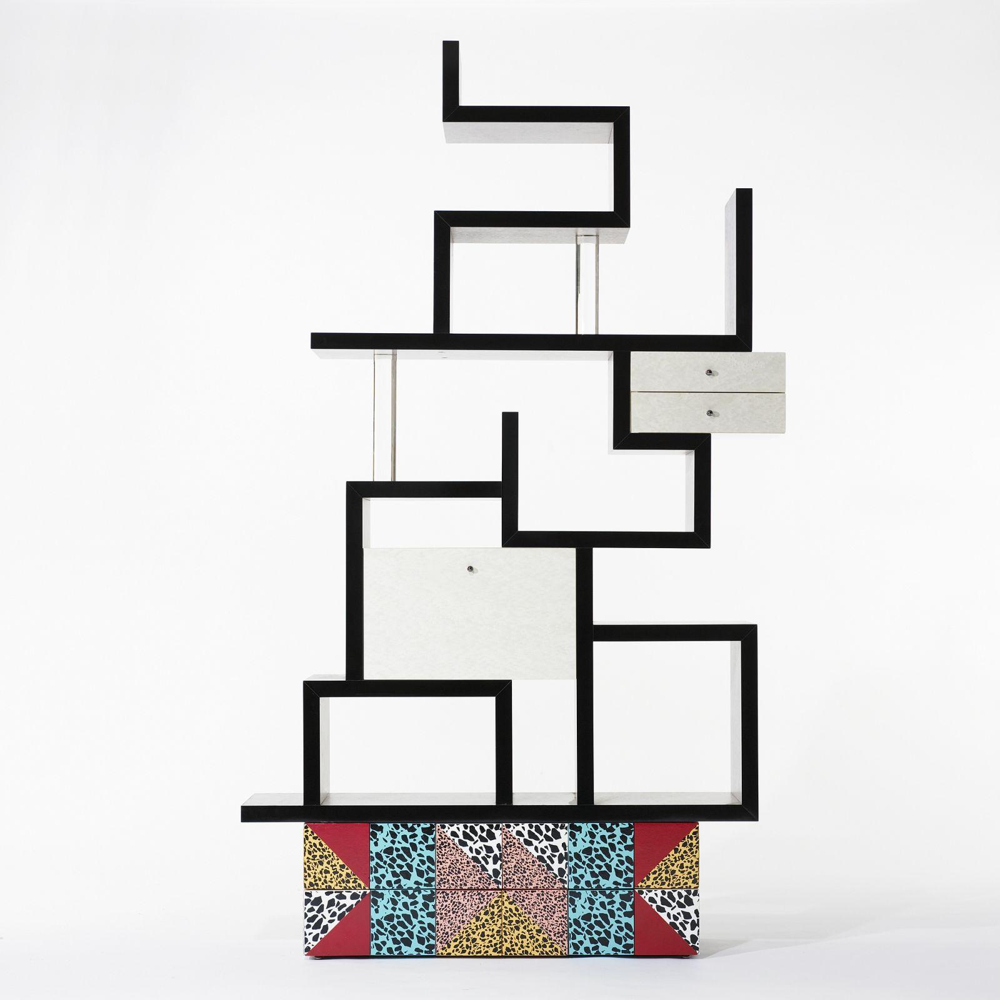 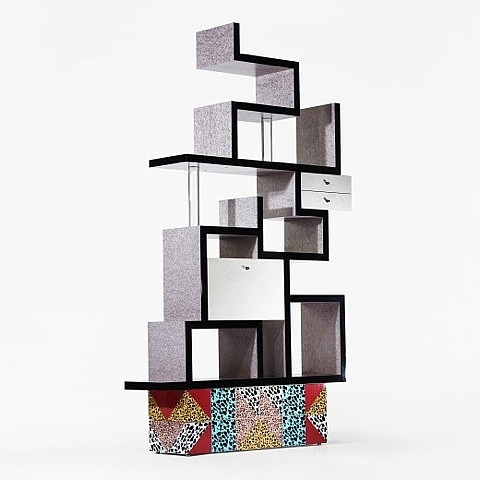 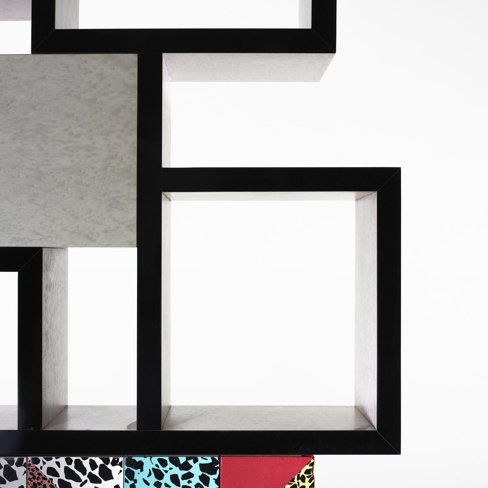Specifications:
- TITLE: Max shelf
- ARTIST: Ettore Sottsass
- WORK DATE: 1987
- CATEGORY: Design
- MATERIALS: stained bird's-eye maple, laminate, terrazzo, Lucite
- MARKINGS: Signed with applied manufacturer’s label to interior: [Memphis Milano Ettore Sottsass 1987 Made In Italy].
- SIZE: h: 86 x w: 53 x d: 14 in / h: 218.4 x w: 134.6 x d: 35.6 cm
Description:
Only thirty-seven examples of the Max shelf have been produced since 1987. Unit features one drop-front bar and two drawers. Signed with applied manufacturer's label to interior: [Memphis Milano Ettore Sottsass 1987 Made In Italy].
Decomposition:
The 3D recostruction of the Max Shelf is composed by:- base
- shelvess of various dimensions
- two small drawers
- one big drawer
- two glass columns
Short description of the recostruction:
The most complex part of the Max Shelf was its main body: the shelves themselves. For drawing them the object was divided in different tiers, each one created using the SIMPLEX_GRID native function of PLASM.
Renderings gallery:
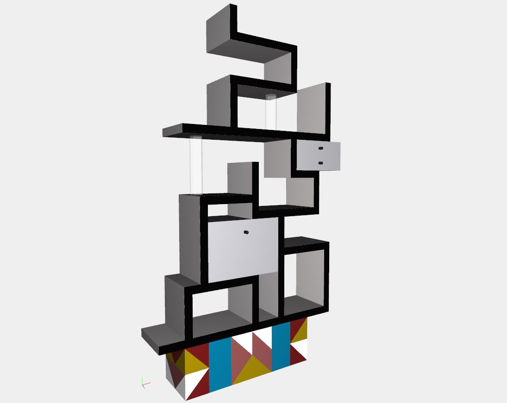
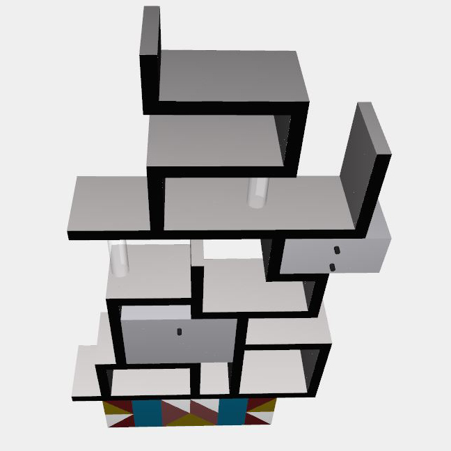
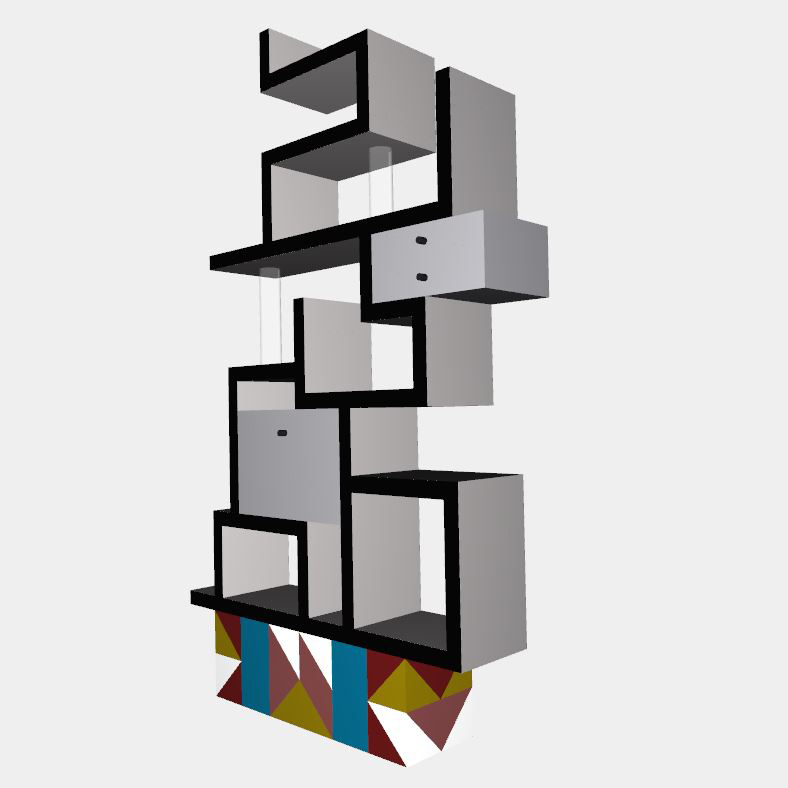
Shiro Kuramata
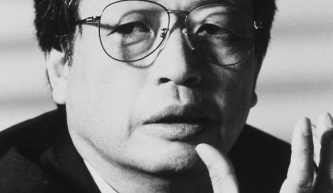Biography:
Shiro Kuramata (29 November 1934 – 1 February 1991) is one of Japan's most important designers of the 20th century. Kuramata was mainly known for his use of industrial materials such as wire steel mesh and lucite to create architectural interiors and furniture. Revolutionary pieces such as the "How High the Moon" chair (1986) reflect the emerging dynamism and maturing creativity of postwar Japan, or his Ikabana, lead cristal free hand blown vase, realized by the Vilca[disambiguation needed] from Colle Valdelsa (Siena) Italy, a unique example of fusion, between oriental and occidental cultures. In 1990 the French government awarded Kuramata the distinguished Ordre des Arts et des Lettres in recognition of his outstanding contribution to art and design.
Sofa with Arms
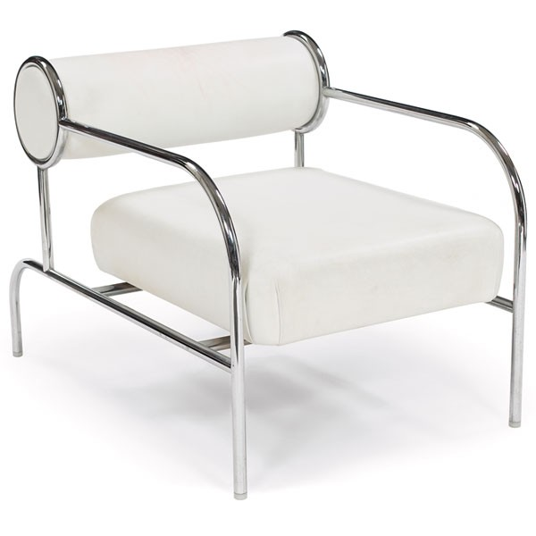
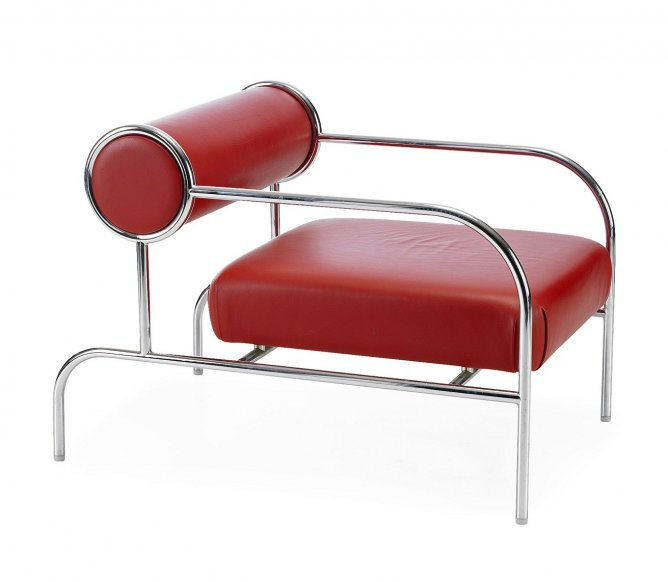
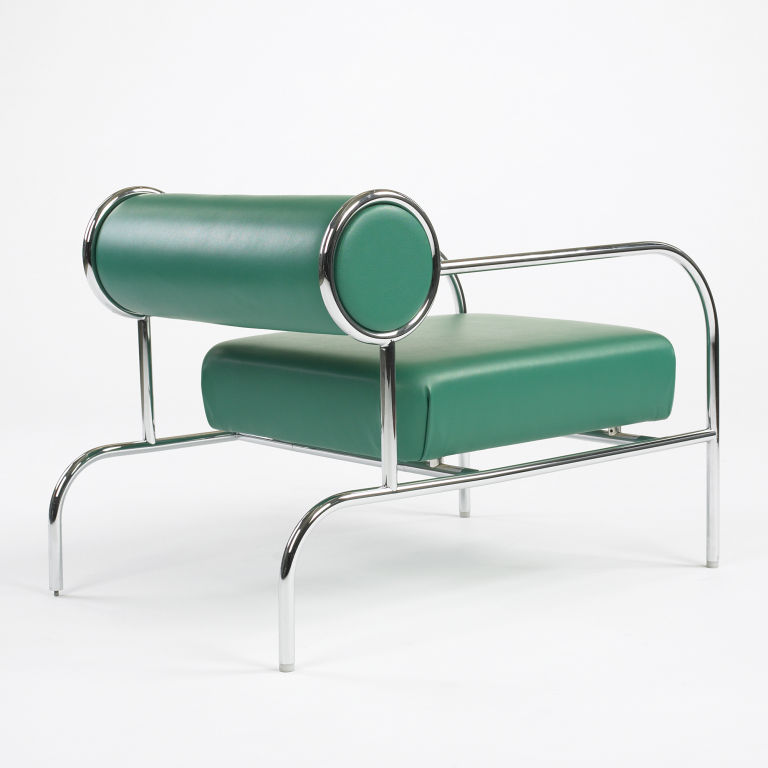